low_844x390 Capture-integritet står i den samlede capture_checks.json. Visuell lysvurdering UNVERIFIED. Råmanifest og bilder er kopiert byteidentisk. Kapitteloppsett, holdte kameraer og Ultra-fotdiagnoser merkes separat.
Samlet oversikt | Uendret råmanifest
dinerlight_arrival 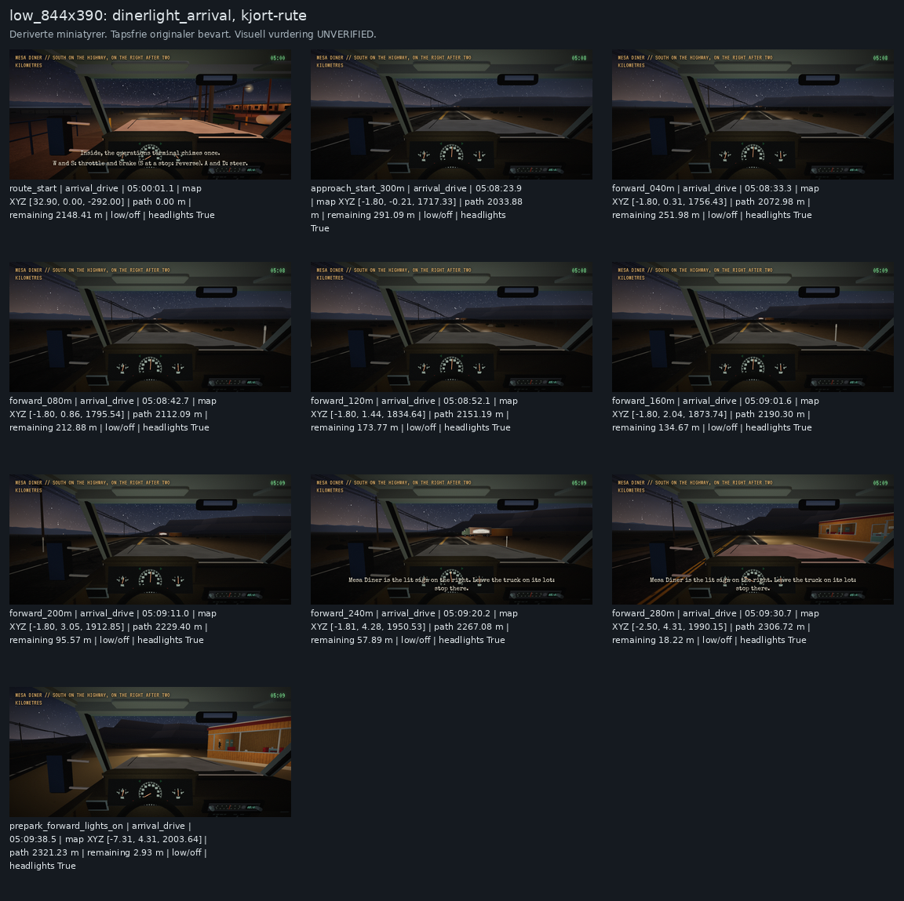
kjort-rute. Originaler under. 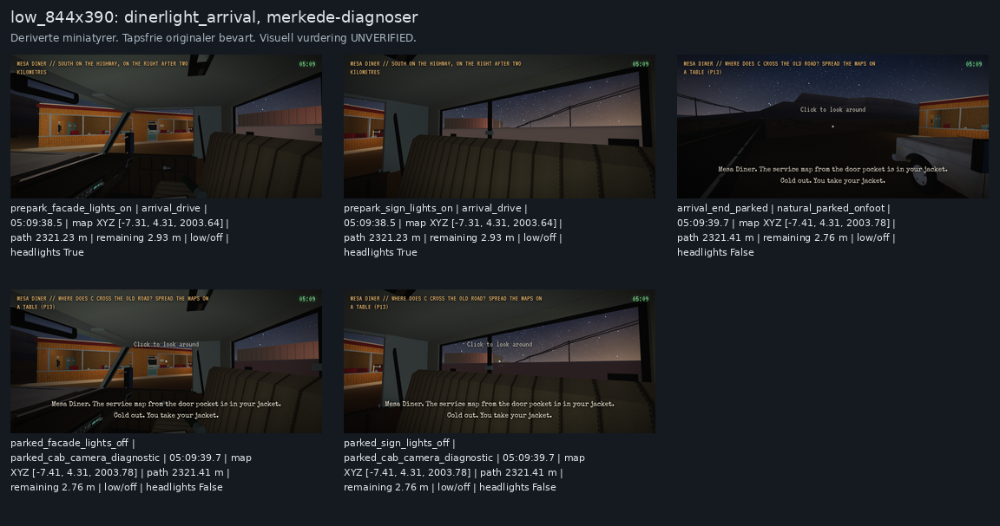
merkede-diagnoser. Originaler under. Tapsfrie originalbilder og faktisk metadata 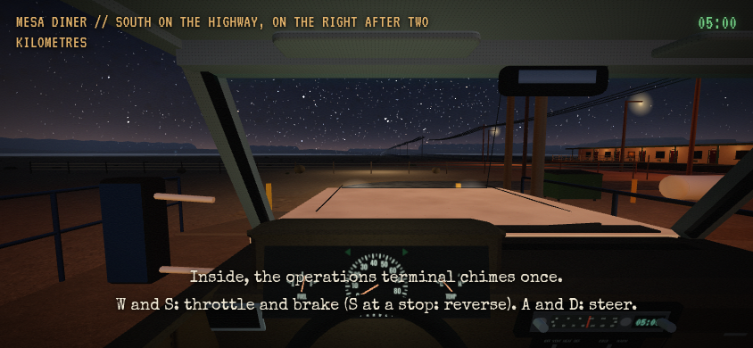
route_start | arrival_drive | 05:00:01.1 | map XYZ [32.90, 0.00, -292.00] | path 0.00 m | remaining 2148.41 m | low/off | headlights True 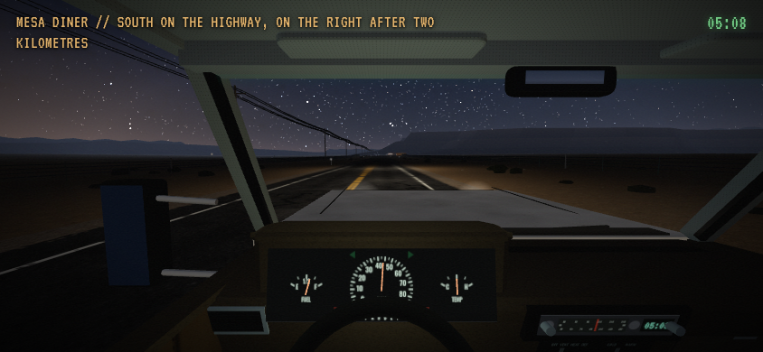
approach_start_300m | arrival_drive | 05:08:23.9 | map XYZ [-1.80, -0.21, 1717.33] | path 2033.88 m | remaining 291.09 m | low/off | headlights True forward_040m | arrival_drive | 05:08:33.3 | map XYZ [-1.80, 0.31, 1756.43] | path 2072.98 m | remaining 251.98 m | low/off | headlights True 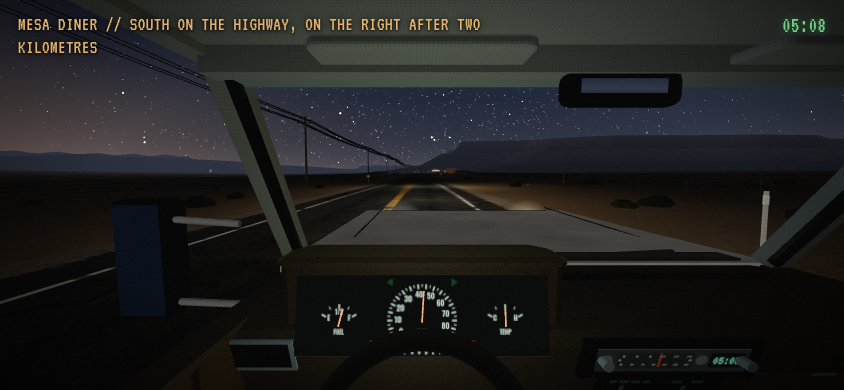
forward_080m | arrival_drive | 05:08:42.7 | map XYZ [-1.80, 0.86, 1795.54] | path 2112.09 m | remaining 212.88 m | low/off | headlights True 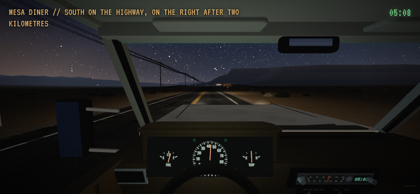
forward_120m | arrival_drive | 05:08:52.1 | map XYZ [-1.80, 1.44, 1834.64] | path 2151.19 m | remaining 173.77 m | low/off | headlights True 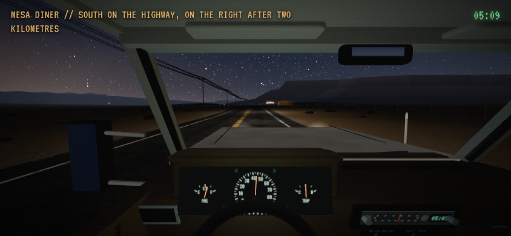
forward_160m | arrival_drive | 05:09:01.6 | map XYZ [-1.80, 2.04, 1873.74] | path 2190.30 m | remaining 134.67 m | low/off | headlights True 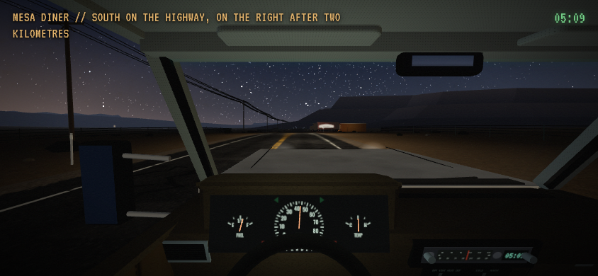
forward_200m | arrival_drive | 05:09:11.0 | map XYZ [-1.80, 3.05, 1912.85] | path 2229.40 m | remaining 95.57 m | low/off | headlights True 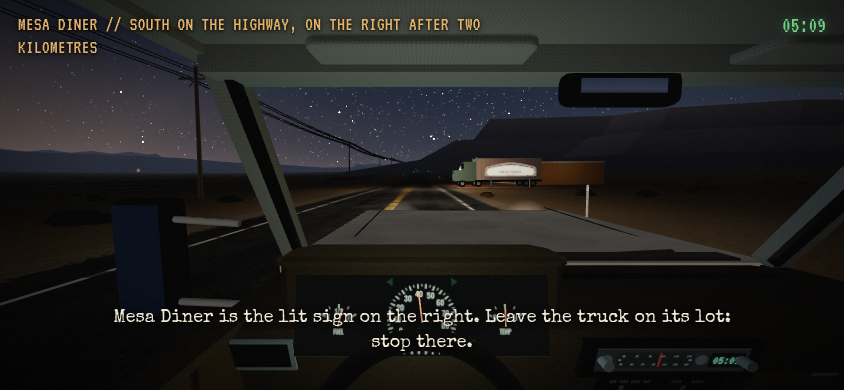
forward_240m | arrival_drive | 05:09:20.2 | map XYZ [-1.81, 4.28, 1950.53] | path 2267.08 m | remaining 57.89 m | low/off | headlights True 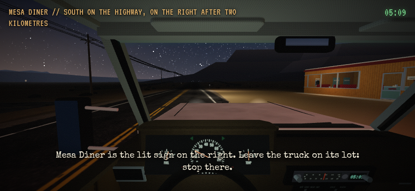
forward_280m | arrival_drive | 05:09:30.7 | map XYZ [-2.50, 4.31, 1990.15] | path 2306.72 m | remaining 18.22 m | low/off | headlights True 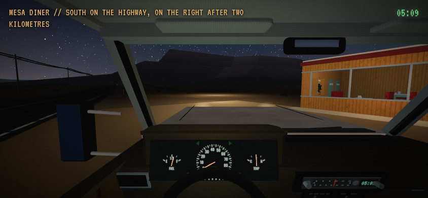
prepark_forward_lights_on | arrival_drive | 05:09:38.5 | map XYZ [-7.31, 4.31, 2003.64] | path 2321.23 m | remaining 2.93 m | low/off | headlights True 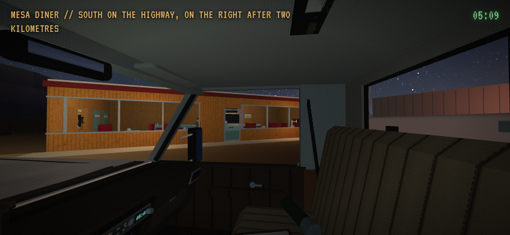
prepark_facade_lights_on | arrival_drive | 05:09:38.5 | map XYZ [-7.31, 4.31, 2003.64] | path 2321.23 m | remaining 2.93 m | low/off | headlights True 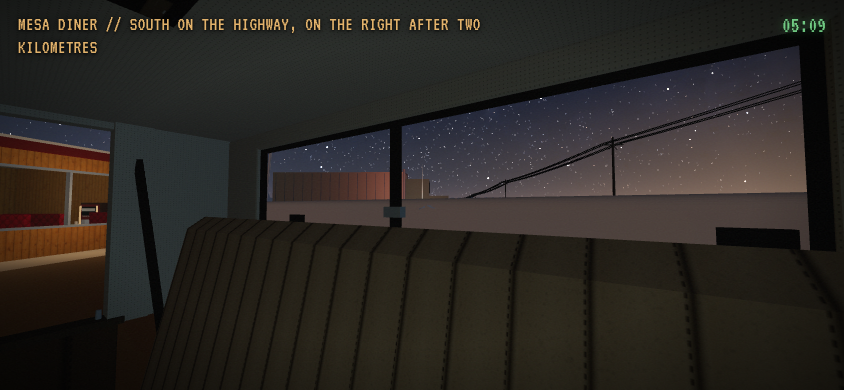
prepark_sign_lights_on | arrival_drive | 05:09:38.5 | map XYZ [-7.31, 4.31, 2003.64] | path 2321.23 m | remaining 2.93 m | low/off | headlights True 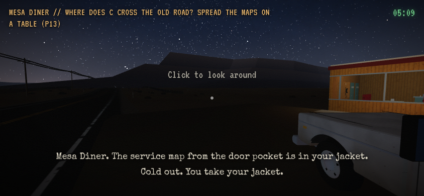
arrival_end_parked | natural_parked_onfoot | 05:09:39.7 | map XYZ [-7.41, 4.31, 2003.78] | path 2321.41 m | remaining 2.76 m | low/off | headlights False 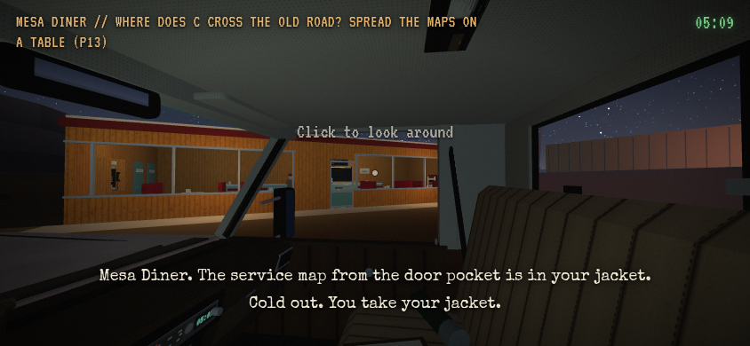
parked_facade_lights_off | parked_cab_camera_diagnostic | 05:09:39.7 | map XYZ [-7.41, 4.31, 2003.78] | path 2321.41 m | remaining 2.76 m | low/off | headlights False 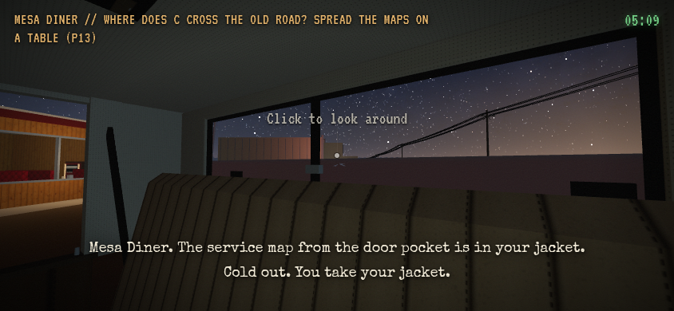
parked_sign_lights_off | parked_cab_camera_diagnostic | 05:09:39.7 | map XYZ [-7.41, 4.31, 2003.78] | path 2321.41 m | remaining 2.76 m | low/off | headlights False dinerlight_departure 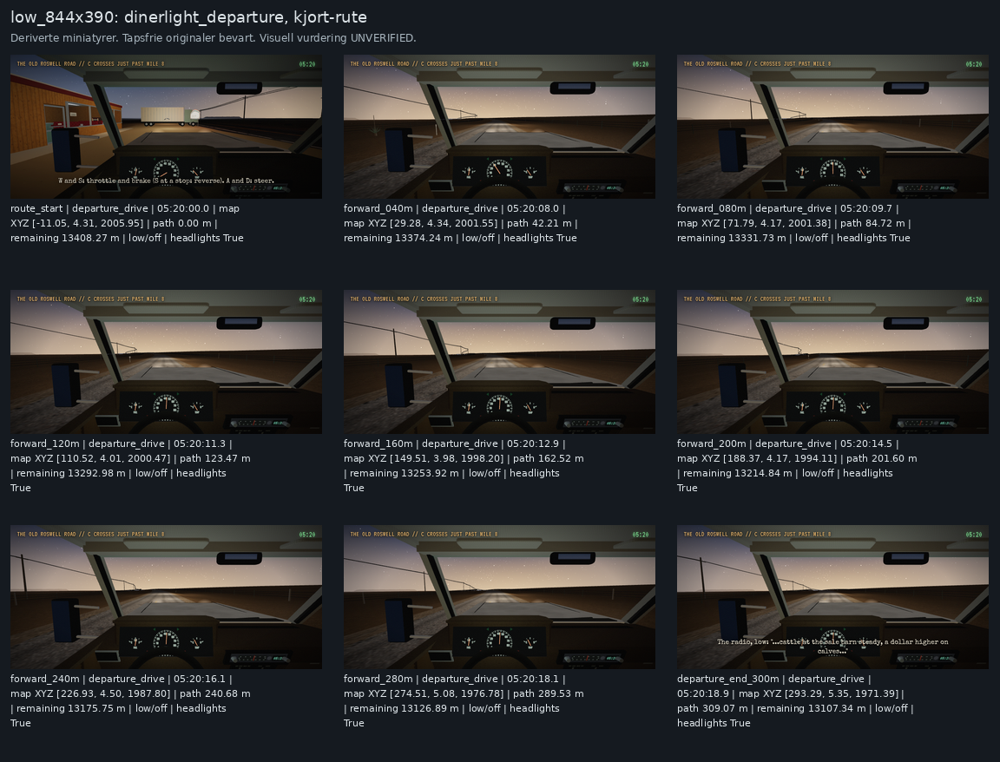
kjort-rute. Originaler under. Tapsfrie originalbilder og faktisk metadata 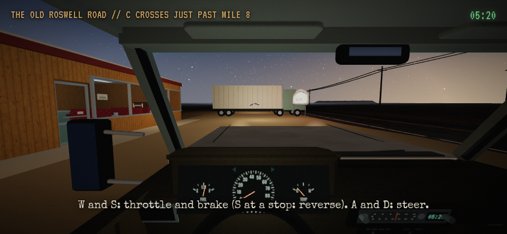
route_start | departure_drive | 05:20:00.0 | map XYZ [-11.05, 4.31, 2005.95] | path 0.00 m | remaining 13408.27 m | low/off | headlights True forward_040m | departure_drive | 05:20:08.0 | map XYZ [29.28, 4.34, 2001.55] | path 42.21 m | remaining 13374.24 m | low/off | headlights True 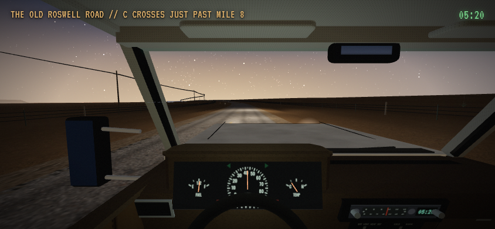
forward_080m | departure_drive | 05:20:09.7 | map XYZ [71.79, 4.17, 2001.38] | path 84.72 m | remaining 13331.73 m | low/off | headlights True forward_120m | departure_drive | 05:20:11.3 | map XYZ [110.52, 4.01, 2000.47] | path 123.47 m | remaining 13292.98 m | low/off | headlights True forward_160m | departure_drive | 05:20:12.9 | map XYZ [149.51, 3.98, 1998.20] | path 162.52 m | remaining 13253.92 m | low/off | headlights True forward_200m | departure_drive | 05:20:14.5 | map XYZ [188.37, 4.17, 1994.11] | path 201.60 m | remaining 13214.84 m | low/off | headlights True 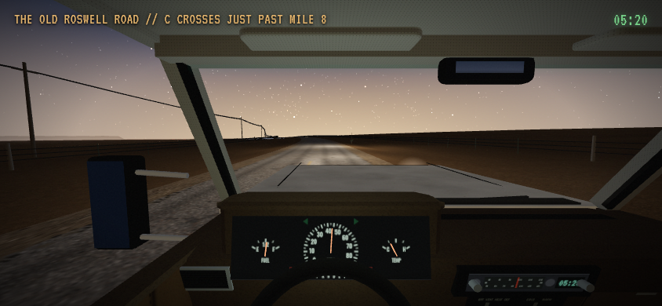
forward_240m | departure_drive | 05:20:16.1 | map XYZ [226.93, 4.50, 1987.80] | path 240.68 m | remaining 13175.75 m | low/off | headlights True 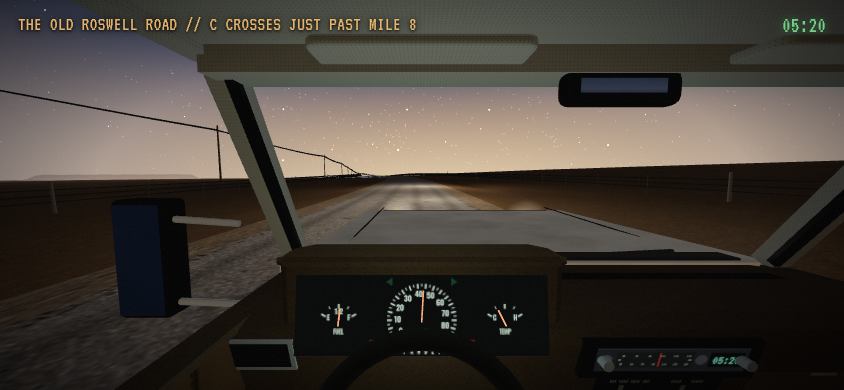
forward_280m | departure_drive | 05:20:18.1 | map XYZ [274.51, 5.08, 1976.78] | path 289.53 m | remaining 13126.89 m | low/off | headlights True 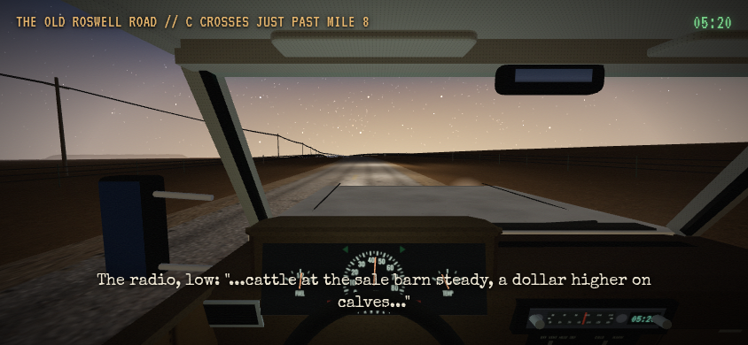
departure_end_300m | departure_drive | 05:20:18.9 | map XYZ [293.29, 5.35, 1971.39] | path 309.07 m | remaining 13107.34 m | low/off | headlights True